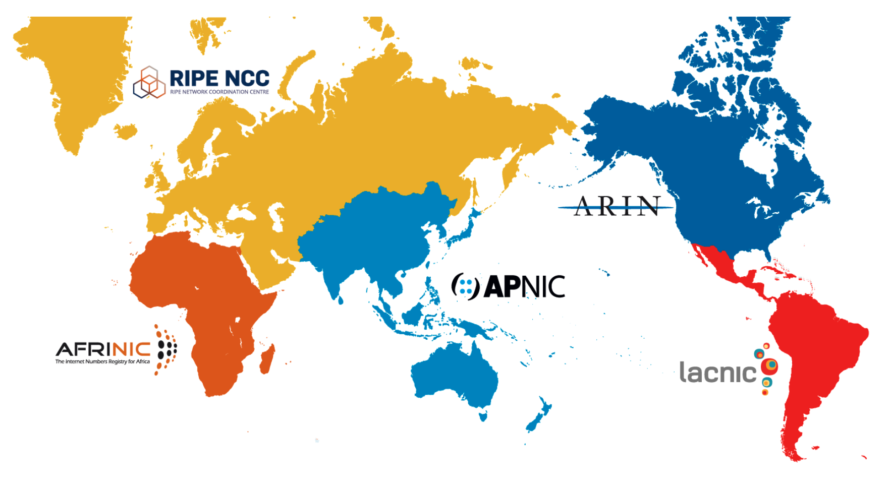
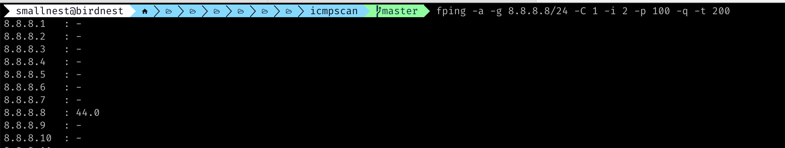

新开一个Go编程系列，主要讲Go语言的高级编程技术，希望能像《Go并发编程指南》一样形成一个系列，不要断更。
这一篇是使用gopacket库编程的一部分，主要是通过手工构造数据链路层、网络层、传输层的包，实现扫描全网(示例中是中国大陆的) ipv4的IP地址，看看对应的网络是否可达。 首先我们需要知道全网的IP地址，其实我们可以使用fping探测这些IP是否连通，然后我们自己基于ICMP快速扫描这些IP,找出全网活跃的IP地址，最后我们使用tcp scan的方式扫描全网的IP,甚至你可以扫描公网上暴露的Redis实例。
请勿用本文介绍的技术做任何违法的事情。本文只分享网络底层(高级)的编程技术，不涉及公司的业务逻辑，不涉及任何黑客行为。
获取全网公网的IP地址
全球IP地址块被IANA(Internet Assigned Numbers Authority)分配给全球五大地区性IP地址分配机构，它们分别是：
- ARIN (American Registry for Internet Numbers)
目前该机构主要负责北美地区的 IP地址分配。同时也负责为全球 NSP (Network Service Providers) 分配地址。
- RIPE (Reseaux IP Europeens)
目前该机构主要负责欧洲、中东、中亚等地区的 IP 地址分配。
- APNIC (Asia Pacific Network Information Center)
目前该机构负责亚洲、太平洋地区的 IP 地址分配。
- LACNIC (Latin America and the Caribbean Information Center)
目前该机构负责拉丁美洲和加勒比地区的 IP 地址分配。
- AFRINIC (African Network Information Centre)
目前该机构负责非洲区域的 IP 地址分配。

有些文章说还三大地区性中心，应该是比较古老的说法，现在是五大区域中心。
虽然本文中说的是全网的公网IP,但是我们还是聚焦我们国家自己的公网IP, 也就是由APNIC负责分配的IP地址。我国中国移动、中国联通、中国电信以及以前的中国铁通、中国卫通、中国网通、教育网等都申请了一大批的网络地址，包括现在阿里、腾讯、百度、华为等云服务商手里也积囤积了一大批的IP地址。
这五大区域中心提供了它们分配的IP地址端和自治系统列表，并且是公开的，你可以使用下面的连接获取：
1 2 3 4 5
| https://ftp.arin.net/pub/stats/arin/delegated-arin-extended-latest https://ftp.ripe.net/ripe/stats/delegated-ripencc-extended-latest https://ftp.apnic.net/stats/apnic/delegated-apnic-extended-latest https://ftp.lacnic.net/pub/stats/lacnic/delegated-lacnic-extended-latest https://ftp.afrinic.net/pub/stats/afrinic/delegated-afrinic-extended-latest
|
和我们最相关的是亚洲太平洋地区APNIC分配的地址。虽然本文中说的是全网的公网IP,但是我们还是聚焦我们国家自己的公网IP, 也就是由APNIC负责分配的IP地址。我国中国移动、中国联通、中国电信以及以前的中国铁通、中国卫通、中国网通、教育网等都申请了一大批的网络地址，包括现在阿里、腾讯、百度、华为等云服务商手里也积囤积了一大批的IP地址。
通过过滤，我们可以得到分配给中国大陆的IP地址:
1 2 3 4
| #!/bin/bash wget -c http://ftp.apnic.net/stats/apnic/delegated-apnic-latest cat delegated-apnic-latest | awk -F '|' '/CN/&&/ipv4/ {print $4 "/" 32-log($5)/log(2)}' | cat > ipv4.txt
|
这个ipv4.txt文件包含分配给中国大陆的IP网段1:
1 2 3 4 5 6 7 8 9
| 1.0.1.0/24 1.0.2.0/23 1.0.8.0/21 1.0.32.0/19 1.1.0.0/24 1.1.2.0/23 1.1.4.0/22 1.1.8.0/24 1.1.9.0/24
|
本文不涉及IP地址归属的问题。通过whois,我们能够查询某个网段隶属于某个运行商和省份，但是也不完全准确，可能会有IP地址借用等问题，所以有http://www.ipip.net/这样的服务商，通过其他一些手段，提供更精准的精确到县区市的IP归属信息。
现在公网所有的IP地址我们都准备好了，下一步就是探测这些IP地址是不是活着的。因为申请的IP地址不可能全部都使用，即使使用的IP也可能有关机或者被封禁的问题，所以不一定所有IP都能连接上，我们本文的例子，就是要把这些活着的IP快速找出来。
使用fping批量扫描
我们检查主机是否存活的最常用的工具就是ping。
ping是一种网络工具，用来测试数据包能否透过IP协议到达特定主机。ping的运作原理是向目标主机传出一个ICMP的请求回显数据包，并等待接收回显回应数据包。程序会按时间和成功响应的次数估算丢失数据包率（丢包率）和数据包往返时间（网络时延）。
在1983年12月，Mike Muuss编写了首个这样的程序，用于在IP网络出现问题时方便探查其根源。因为这个程序的运作原理与潜水艇的主动声纳相似，他便用声纳的声音来为程序取名。
当我们想知道某个主机是否存活时，常常说 “ping一下它的IP地址，看看是否能ping通”。
Linux的ping工具除了使用ICMP协议外，还支持使用UDP或者TCP的方式进行探活，因为大部分网络程序都使用的UDP和TCP协议，所以使用这两个协议更符合业务的网络协议，毕竟网络设备对ICMP和TCP/UDP处理很可能不是一样的，比如TCP程序交换机可以根据五元组进行哈希选择下一跳的端口。
虽然ping工具适合探测主机存活的场景，但是它一次只能探测一个目标IP,在我们本文中的场景中，我们想探测非常多的Ip地址，一个一个的探测的话不知道探到猴年马月了，所以我们会用到另外一个工具: fping。
fping类似于 ping 操作，但在 ping 多个主机时性能要好得多。fping有着非常悠久的历史：Roland Schemers在1992年发布了它的第一个版本，并且从那时起，它已成为标准的网络诊断和统计工具 。
下面就是扫描 8.8.8.8/24网段的情况:

基于fping的功能，我们可以逐网段的探测ipv4.txt文件中的每一行的网段，输出探测结果:
1 2 3 4 5 6 7 8 9 10 11 12 13 14 15 16 17 18 19 20 21 22 23 24 25 26 27 28 29 30 31
| package main import ( "bufio" "fmt" "os" "os/exec" "strings" "github.com/kataras/golog" ) func main() { err := exec.Command("/bin/bash", "ip.sh").Run() if err != nil { golog.Fatal(err) } defer os.Remove("ipv4.txt") defer os.Remove("delegated-apnic-latest") ipList, err := os.Open("ipv4.txt") if err != nil { panic(err) } scanner := bufio.NewScanner(ipList) for scanner.Scan() { netmask := scanner.Text() fping(netmask) } }
|
首先我们通过脚本得到大陆的所有分配的IP地址段，存入到ipv4.txt文件中。这个文件中每一行都包含一个IP地址段，我们使用bufio.Scanner逐行扫描。每得到一个地址段，就调用fping函数处理:
1 2 3 4 5 6 7 8 9 10 11 12 13 14 15 16 17 18 19 20 21 22 23 24 25 26 27 28 29 30 31
| func fping(netmask string) { fpingCmd := "fping -a -g " + netmask + " -C 1 -i 2 -H 32 -q -t 200 2>&1" cmd := exec.Command("/bin/bash", "-c", fpingCmd) r, err := cmd.StdoutPipe() if err != nil { return } err = cmd.Start() if err != nil { return } scanner := bufio.NewScanner(r) for scanner.Scan() { line := scanner.Text() if strings.Contains(line, ": -") { continue } if strings.Contains(line, "ICMP Time Exceeded") { continue } fmt.Println(line) } cmd.Wait() }
|
这里我们使用exec.Command调用fping命令，一次扫描一个网段，如果是超时的或者不通的IP,我们忽略，只把存活的IP地址打印出来。
自己实现ICMP扫描
使用fping虽然相比ping对于多主机的探测方式性能更好，但是还是达不到我们的需求，我们想持续扫描全网的IP地址的存活性，这个时候我们就不得不编写我们自己的程序了。
我们可以采用和ping、fping的探测协议一样，发送ICMP探测包，如果有ICMP的Reply回来，我们就认为网络是通的。
我们采用手工构造数据链路层的帧，从底层构造这个发送的数据。
数据链路层需要设置mac地址, 本地主机的地址我们可以获取出来(虽然可能有多个网卡，但是我们要挑选出实际路由使用的那个网卡的Mac地址)，根据网络处理的方式，我们不需要知道目标地址的Mac地址，只需要填写我们的网关的Mac地址即可，网关会通过路由协议把探测包传播出去，最终到达目标地址，或者中途被丢掉。（如果ping同一个局域网内的主机,则需要填写目标主机的Mac地址，而不是网关的 Mac地址）
1 2 3 4 5
| eth := layers.Ethernet{ SrcMAC: s.iface.HardwareAddr, DstMAC: *s.gwHardwareAddr, EthernetType: layers.EthernetTypeIPv4, }
|
所以第一部就是我们要把本地和网关的Mac地址找出来。找这个地址的协议是arp协议，我们需要构造arp包，处理arp的返回结果:
1 2 3 4 5 6 7 8 9 10 11 12 13 14 15 16 17 18 19 20 21 22 23 24 25 26 27 28 29 30 31 32 33 34 35 36 37 38 39 40 41 42 43 44 45 46 47 48 49 50 51 52 53 54 55
| // getHwAddr gets the hardware address of the gateway by sending an ARP request. func (s *Scanner) getHwAddr() (net.HardwareAddr, error) { start := time.Now() arpDst := s.gw // prepare the layers to send for an ARP request. eth := layers.Ethernet{ SrcMAC: s.iface.HardwareAddr, DstMAC: net.HardwareAddr{0xff, 0xff, 0xff, 0xff, 0xff, 0xff}, EthernetType: layers.EthernetTypeARP, } arp := layers.ARP{ AddrType: layers.LinkTypeEthernet, Protocol: layers.EthernetTypeIPv4, HwAddressSize: 6, ProtAddressSize: 4, Operation: layers.ARPRequest, SourceHwAddress: []byte(s.iface.HardwareAddr), SourceProtAddress: []byte(s.src), DstHwAddress: []byte{0, 0, 0, 0, 0, 0}, DstProtAddress: []byte(arpDst), } // send a single ARP request packet (we never retry a send) if err := s.sendPackets(ð, &arp); err != nil { return nil, err } // wait 3 seconds for an ARP reply. for { if time.Since(start) > time.Second*3 { return nil, errors.New("timeout getting ARP reply") } data, _, err := s.handle.ReadPacketData() if err == pcap.NextErrorTimeoutExpired { continue } else if err != nil { return nil, err } packet := gopacket.NewPacket(data, layers.LayerTypeEthernet, gopacket.NoCopy) if arpLayer := packet.Layer(layers.LayerTypeARP); arpLayer != nil { arp := arpLayer.(*layers.ARP) if net.IP(arp.SourceProtAddress).Equal(net.IP(arpDst)) { return net.HardwareAddr(arp.SourceHwAddress), nil } } } } // sendPackets sends a packet with the given layers. func (s *Scanner) sendPackets(l ...gopacket.SerializableLayer) error { if err := gopacket.SerializeLayers(s.buf, s.opts, l...); err != nil { return err } return s.handle.WritePacketData(s.buf.Bytes()) }
|
构造这些底层的网络包(帧)，我们常用的是gopacket库，并且利用它发送和接收包。
上面这个函数开始构造了layers.Ethernet和layers.ARP的内容，然后调用sendPackets发送出去，然后调用s.handle.ReadPacketData()读取arp返回结果，返回结果中就包含了网关的Mac地址。
实际上，我们定义了一个Scanner，方便我们处理整个逻辑。这个Scanner初始化的时候，把探测使用的本地IP地址、本地Mac地址、网关Mac地址都准备好:
1 2 3 4 5 6 7 8 9 10 11 12 13 14 15 16 17 18 19 20 21 22 23 24 25 26 27 28 29 30 31 32 33 34 35 36 37 38 39 40 41 42 43 44 45 46 47 48 49 50 51 52 53 54 55 56 57 58 59 60
| type Scanner struct { iface *net.Interface gw net.IP gwHardwareAddr *net.HardwareAddr src net.IP handle *pcap.Handle opts gopacket.SerializeOptions buf gopacket.SerializeBuffer } func NewScanner() *Scanner { s := &Scanner{ opts: gopacket.SerializeOptions{ FixLengths: true, ComputeChecksums: true, }, buf: gopacket.NewSerializeBuffer(), } router, err := routing.New() if err != nil { log.Fatal(err) } iface, gw, src, err := router.Route(net.ParseIP("114.114.114.114")) if err != nil { log.Fatal(err) } s.gw, s.src, s.iface = gw, src, iface handle, err := pcap.OpenLive(iface.Name, 100, true, pcap.BlockForever) if err != nil { log.Fatal(err) } s.handle = handle gwHwAddr, err := s.getHwAddr() if err != nil { log.Fatal(err) } s.gwHardwareAddr = &gwHwAddr log.Infof("scanning with interface %v, gateway %v, src %v, hwaddr: %v", iface.Name, gw, src, gwHwAddr) return s }
|
这里有一个技巧，一般服务器可能有多个网卡和更多的Ip地址，那么探测的时候使用哪一个网卡和本地IP地址呢？可以使用router.Route，得到访问公网锁使用的本地网卡、网关、本地IP等，这个例子中我们访问知名的114.114.114.114公网地址作为目标地址，把这些信息保存下来备用，接着调用getHwAddr获取网关的Mac地址。
gopacket通过pcap.OpenLive打开一个设备进行读写网络数据，我们在创建Scanner时候都把这些准备好。
现在万事俱备，只欠东风了，我们需要把要探测的目的IP传给它，让它进行探测。这里我们实现一个Scan方法:
1 2 3 4 5 6 7 8 9
| func (s *Scanner) Scan(input chan []string) (output chan string) { output = make(chan string, 1024*1024) go s.recv(output) go s.send(input) return output }
|
input是一个channel, 用户可以把要探测的目标IP传入到这个channel中。它会返回一个output channel,这个channel中包含活跃的目标IP。
那么整个逻辑都很清晰了：启动一个goroutine发送ICMP包，启动一个goroutine接收ICMP,两者之间并没有阻塞，性能自然非常的好:
1 2 3 4 5 6 7 8 9 10 11 12 13 14 15 16 17 18 19 20 21 22 23 24 25 26 27 28 29 30 31 32 33 34 35 36 37 38 39 40 41 42 43 44 45 46
| func (s *Scanner) send(input chan []string) error { id := uint16(os.Getpid()) seq := uint16(0) for ips := range input { for _, ip := range ips { dstIP := net.ParseIP(ip) if dstIP == nil { continue } dstIP = dstIP.To4() if dstIP == nil { continue } eth := layers.Ethernet{ SrcMAC: s.iface.HardwareAddr, DstMAC: *s.gwHardwareAddr, EthernetType: layers.EthernetTypeIPv4, } ip4 := layers.IPv4{ SrcIP: s.src, DstIP: dstIP.To4(), Version: 4, TTL: 64, Protocol: layers.IPProtocolICMPv4, } icmpLayer := layers.ICMPv4{ TypeCode: layers.CreateICMPv4TypeCode(layers.ICMPv4TypeEchoRequest, 0), Id: id, Seq: seq, } seq++ err := s.sendPackets(ð, &ip4, &icmpLayer) if err != nil { log.Error(err) } } } return nil }
|
发送数据构造layers.Ethernet、layers.IPv4、layers.ICMPv4包，每个ICMPv4包探测一个目标IP,它值负责发送。
1 2 3 4 5 6 7 8 9 10 11 12 13 14 15 16 17 18 19 20 21 22 23 24 25 26 27 28 29 30 31 32 33 34 35 36 37 38 39 40 41 42 43 44 45 46 47 48 49
| func (s *Scanner) recv(output chan string) { defer close(output) s.handle.SetBPFFilter("dst host " + s.src.To4().String() + " and icmp") for { data, _, err := s.handle.ReadPacketData() if err == pcap.NextErrorTimeoutExpired { continue } else if errors.Is(err, io.EOF) { return } else if err != nil { log.Infof("error reading packet: %v", err) continue } packet := gopacket.NewPacket(data, layers.LayerTypeEthernet, gopacket.NoCopy) if net := packet.NetworkLayer(); net == nil { continue } else if ipLayer := packet.Layer(layers.LayerTypeIPv4); ipLayer == nil { continue } else if ip, ok := ipLayer.(*layers.IPv4); !ok { continue } else if icmpLayer := packet.Layer(layers.LayerTypeICMPv4); icmpLayer == nil { continue } else if icmp, ok := icmpLayer.(*layers.ICMPv4); !ok { continue } else if icmp.TypeCode.Type() == layers.ICMPv4TypeEchoReply { select { case output <- ip.SrcIP.String(): default: } } else { } } }
|
接收的逻辑有个技巧，它通过BPFFilter对packet在内核态进行过滤，值关注我们的ICMP回包。 格式你参考tcpdump工具的格式就行，一样一样的。
它读取到ICMP的回包后，就把目标地址写入到output中。
基本上，使用不到一个CPU的资源,在一个半小时左右就把大陆所有的公网IP探测了一遍。
自己实现TCP扫描，并找出暴露Redis端口IP地址
嗯，上面的技术不错，可以很快的扫描全网的公网地址，但是我们还想进一步，使用TCP的方式扫描全网的公网IP,而且，我们扫描特定的·端口，以便看看是否在公网IP上暴露了某个服务。这种扫描经常是安全公司去做扫描，这次我们自己手工实现一把。
这次我们扫描6379端口，这是redis默认的端口。虽然服务器上开了这个端口并不意味着就步数了Redis服务，但是很大可能的确部署了Redis服务。出于安全的考虑，这些暴露的Redis服务应该都设置了AUTH才对，甚至应该通过防火墙设置值允许特定的IP访问才对。
采用TCP方式探测，我们使用三次握手中的前两步：先发送一个syn包，对方可能回一个sync+ack包(如果端口开启了)或者rst包(如果端口没有开启，或者拒绝连接的话)，或者没有任何返回。我们值关注前两种。
其实代码逻辑和上面的ICMP程序差不多太多，获取网关Mac地址等方式和上面而例子没啥区别。我们还是定义了一个Scanner类型，但是多了本地端口和远程端口的信息:
1 2 3 4 5 6 7 8 9 10 11 12 13 14 15 16 17 18 19 20
| type Scanner struct { iface *net.Interface gw, src net.IP gwHardwareAddr *net.HardwareAddr srcPort, dstPort int handle *pcap.Handle opts gopacket.SerializeOptions buf gopacket.SerializeBuffer }
|
我们想一次收集可以连通的但是端口未开启的IP地址，和端口已开启的IP地址，所以Scan方法作了微调，支持两个列表的输出:
1 2 3 4 5 6 7 8 9 10
| func (s *Scanner) Scan(input chan []string) (connOutput, portOpenOutput chan string) { connOutput = make(chan string, 1024*1024) portOpenOutput = make(chan string, 1024*1024) go s.recv(connOutput, portOpenOutput) go s.send(input) return connOutput, portOpenOutput }
|
发送数据时我们要构造TCP的syn包:
1 2 3 4 5 6 7 8 9 10 11 12 13 14 15 16 17 18 19 20 21 22 23 24 25 26 27 28 29 30 31 32 33 34 35 36 37 38 39 40 41 42 43
| func (s *Scanner) send(input chan []string) error { for ips := range input { for _, ip := range ips { dstIP := net.ParseIP(ip) if dstIP == nil { continue } dstIP = dstIP.To4() if dstIP == nil { continue } eth := layers.Ethernet{ SrcMAC: s.iface.HardwareAddr, DstMAC: *s.gwHardwareAddr, EthernetType: layers.EthernetTypeIPv4, } ip4 := layers.IPv4{ SrcIP: s.src, DstIP: dstIP.To4(), Version: 4, TTL: 64, Protocol: layers.IPProtocolTCP, } tcp := layers.TCP{ SrcPort: layers.TCPPort(s.srcPort), DstPort: layers.TCPPort(s.dstPort), SYN: true, } tcp.SetNetworkLayerForChecksum(&ip4) err := s.sendPackets(ð, &ip4, &tcp) if err != nil { log.Error(err) } } } return nil }
|
接收数据的时候，我们区分TCP+ACK包和RST包:
1 2 3 4 5 6 7 8 9 10 11 12 13 14 15 16 17 18 19 20 21 22 23 24 25 26 27 28 29 30 31 32 33 34 35 36 37 38 39 40 41 42 43 44 45 46 47 48 49 50 51 52 53
| func (s *Scanner) recv(connOutput, portOpenOutput chan string) { defer close(connOutput) defer close(portOpenOutput) s.handle.SetBPFFilter("dst port " + strconv.Itoa(s.srcPort) + " and dst host " + s.src.To4().String()) for { data, _, err := s.handle.ReadPacketData() if err == pcap.NextErrorTimeoutExpired { continue } else if errors.Is(err, io.EOF) { return } else if err != nil { log.Infof("error reading packet: %v", err) continue } packet := gopacket.NewPacket(data, layers.LayerTypeEthernet, gopacket.NoCopy) if net := packet.NetworkLayer(); net == nil { continue } else if ipLayer := packet.Layer(layers.LayerTypeIPv4); ipLayer == nil { continue } else if ip, ok := ipLayer.(*layers.IPv4); !ok { continue } else if tcpLayer := packet.Layer(layers.LayerTypeTCP); tcpLayer == nil { } else if tcp, ok := tcpLayer.(*layers.TCP); !ok { continue } else if tcp.DstPort != layers.TCPPort(s.srcPort) { } else if tcp.RST { select { case connOutput <- ip.SrcIP.String(): default: } } else if tcp.SYN && tcp.ACK { select { case portOpenOutput <- ip.SrcIP.String(): default: } } else { } } }
|
代码结构和ICMP的探测区别不大。
借助于gopacket (libpcap)库，我们可以轻松高效的实现全网公网IP扫描，这对于网络探测、安全检查都非常有意义。 根据上面的例子，你也很容易实现UDP方式的探测，你也不妨练习下。